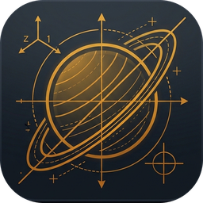

Иконки приложений (PNG 64–512px + Windows ICO) (6)
ВЕКТОР Платформа
Main Brand · PNG / ICO
ВЕКТОР ХАБ
Core / PDM · PNG / ICO
ВЕКТОР МАРС
Electro · PNG / ICO

ВЕКТОР Юпитер
CAD · PNG / ICO
ВЕКТОР Меркурий
Tables · PNG / ICO
ВЕКТОР Венера
Docs · PNG / ICO
01 · Модули экосистемы (Top Bar / Sidebar) (6)
02 · Навигация и каркас (Unified Shell) (20)
04 · ВЕКТОР ХАБ (PDM / База изделий) (10)
05 · ВЕКТОР МАРС (Электротехника) (12)
06 · ВЕКТОР Юпитер (САПР / Черчение) (17)
07 · ВЕКТОР Меркурий (Таблицы / Спецификации) (10)
08 · ВЕКТОР Венера (Документы / ЕСКД) (10)